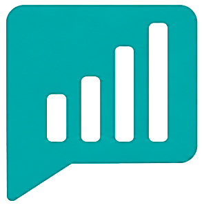

Design, deployment and optimisation of Planning Analytics models — from initial design through to rollout.
Connected data and interactive dashboards that unlock real-time insight for faster decision-making.
Centralised data and automated workflows with SQL, Python and more — less time compiling, more time deciding.
Onboarding programmes, live coaching and video libraries that help teams adopt new tools with confidence.
Reliable, SLA-based support with fast turnaround and expert assistance to keep your analytics running.
Planning Analytics is the engine behind serious financial planning — budgeting, forecasting, and multi-dimensional modelling at scale. We design workspace models that mirror how you actually plan, not a generic template.
Power BI is where your data becomes a story people actually understand. We build dashboards that connect directly to your source systems — including Planning Analytics — so insight doesn't wait for month-end.
Used separately, planning tools and BI dashboards often tell two different stories. We connect them deliberately — so what you forecast in Planning Analytics is the same number you see in your Power BI dashboard, with no manual reconciliation in between.
Book a discovery session and we'll map the right entry point for your team.